Variational Gradient Matching for Dynamical Systems: Dynamic Causal Models

Authors: Nico Stephan Gorbach and Stefan Bauer, email: nico.gorbach@gmail.com
Instructional code for the NIPS (2018) paper " Scalable Variational Inference for Dynamical Systems " by Nico S. Gorbach, Stefan Bauer and Joachim M. Buhmann. The paper is available at https://papers.nips.cc/paper/7066-scalable-variational-inference-for-dynamical-systems.pdf. Please cite our paper if you use our program for a further publication. Part of the derivation below is described in Wenk et al. (2018).
Example dynamical system used in this code: Lotka-Volterra system with half of the time points unobserved. The ODE parameters are also unobserved.
Contents
- Advantages of Variational Gradient Matching
- Simulation Settings
- User Input
- Import Candidate ODEs
- Mass Action Dynamical Systems
- Simulate Trajectory Observations
- Prior on ODE parameters
- Confounding effects
- Prior on States and State Derivatives
- Matching Gradients
- State Couplings in ODEs
- Rewrite ODEs as Linear Combination in Parameters
- Posterior over ODE Parameters
- Rewrite Hemodynamic ODEs as Linear Combination in (monotonic functions of) Individual Hemodynamic States
- Rewrite Neuronal ODEs as Linear Combination in Individual Neuronal States
- Posterior over Individual States
- Mean-field Variational Inference
- Denoising BOLD Observations
- Fitting Observations of State Trajectories
- Coordinate Ascent Variational Gradient Matching
- Intercept due to Confounding Effects
- Proxies for Hemodynamic States
- Proxies for Neuronal States
- Proxy for neuronal couplings (ODE parameters)
- Numerical integration with parameters estimated by variational gradient matching
- Final result
- Time Taken
- References
- Subroutines
Advantages of Variational Gradient Matching
The essential idea of gradient matching (Calderhead et al., 2002) is to match the gradient governed by the ODEs with that inferred from the observations. In contrast to previous approaches gradient matching introduces a prior over states instead of a prior over ODE parameters. The advantages of gradients matching is two-fold:
- A prior over the functional form of state dynamics as opposed to ODE parameters facilitates a more expert-aware estimation of ODE parameters since experts can provide a better a priori description of state dynamics than ODE parameters.
- Gradient matching yields a global gradient as opposed to a local one which offers significant computational advantages and provides access to a rich source of sophisticated optimization tools.
Clear workspace and close figures
clear all; close all;
Simulation Settings
simulation.odes = 'fwd_mod_driving'; simulation.SNR = 5; % signal-to-noise-ratio simulation.ode_param = -0.8 + (0.8-(-0.8)) * rand(1,11); % true non-selfinhibitory neuronal couplings (sampled uniformily in the interval [-0.8,0.8]; simulation.ode_param(end-4:end) = -1; % self-inhibotory neuronal couplings set to -1. simulation.final_time = 359*3.22; % end time for integration simulation.int_interval = 0.01; % integration interval simulation.time_samp = 0:0.1:simulation.final_time; % sample times for observations simulation.observed_states = {}; % indices of states that are directly observed (Boolean)
User Input
Candidate mechanism
candidate_odes = 'fwd_mod_driving';
Prior variance on non-selfinhibitory neuronal couplings
param_prior_variance = realmax;
Kernel
Kernel parameters  :
:
kernel.param = [10,0.2]; % set values of rbf kernel parameters
Error variance on state derivatives (i.e.  ):
):
state.derivative_variance = 6.*ones(11-3,1); % \gamma for gradient matching model
Estimation times
time.est= 0:3.22:359*3.22; % estimation times
Optimization settings
opt_settings.pseudo_inv_type = 'Moore-Penrose'; % type of pseudo inverse; options: 'Moore-Penrose' or 'modified Moore-Penrose' opt_settings.coord_ascent_numb_iter = 200; % number of coordinate ascent iterations opt_settings.clamp_obs_state_to_GP_regression = true; % the observed state trajectories are clamped to the trajectories determined by standard GP regression (Boolean)
Damping for Hemodynamic States
damping = 0.1; % since the hemodynamic states are inferred locally w.r.t. the hemodynamic ODEs we add a damping in the inference.
External input
state.ext_input = importdata('dcm/external_input.txt'); % importing external inputs time.samp = state.ext_input(:,1)'; % unpack sampling time
Import Candidate ODEs
symbols = importdata(['dcm/ODEs/' candidate_odes '_symbols.mat']); % symbols of parameters and states and in 'ODEs.txt' file ode = import_odes(symbols,candidate_odes); ode = write_ODEs_as_symbolic_expression(symbols,ode);
disp('candidate ODEs:'); disp(ode.raw)
candidate ODEs:
'-(5.*exp((17.*[v_{1}])./8))./8-(25.*exp(-[q_{1}]).*exp([f_{1}]).*((3./5).^exp(-[f_{1}])-1))./16'
'-(5.*exp((17.*[v_{3}])./8))./8-(25.*exp(-[q_{3}]).*exp([f_{3}]).*((3./5).^exp(-[f_{3}])-1))./16'
'-(5.*exp((17.*[v_{2}])./8))./8-(25.*exp(-[q_{2}]).*exp([f_{2}]).*((3./5).^exp(-[f_{2}])-1))./16'
'(5.*exp(-[v_{1}]).*exp([f_{1}]))./8-(5.*exp((17.*[v_{1}])./8))./8'
'(5.*exp(-[v_{3}]).*exp([f_{3}]))./8-(5.*exp((17.*[v_{3}])./8))./8'
'(5.*exp(-[v_{2}]).*exp([f_{2}]))./8-(5.*exp((17.*[v_{2}])./8))./8'
'[s_{1}].*exp(-[f_{1}])'
'[s_{3}].*exp(-[f_{3}])'
'[s_{2}].*exp(-[f_{2}])'
'[n_1]-(3.*[s_{1}])./5-(8.*exp([f_{1}]))./25+8./25'
'[n_3]-(3.*[s_{3}])./5-(8.*exp([f_{3}]))./25+8./25'
'[n_2]-(3.*[s_{2}])./5-(8.*exp([f_{2}]))./25+8./25'
'[a_{11}].*[n_1]+[a_{12}].*[n_2]+[c_{11}].*[u_{1}]'
'[a_{32}].*[n_2]+[a_{33}].*[n_3]+[c_{33}].*[u_{3}]'
'[a_{22}].*[n_2]+[a_{23}].*[n_3]+[n_1].*([a_{21}]+[b_{212}].*[u_{2}]+[b_{213}].*[u_{3}])'
Mass Action Dynamical Systems
A deterministic dynamical system is represented by a set of 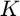 ordinary differential equations (ODEs) with model parameters  that describe the evolution of states 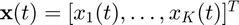 such that:
that describe the evolution of states 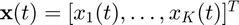 such that:
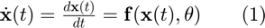.
A sequence of observations, 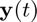, is usually contaminated by measurement error which we assume to be normally distributed with zero mean and variance for each of the states, i.e.  , with 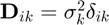. For
, with 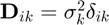. For  distinct time points the overall system may therefore be summarized as:
distinct time points the overall system may therefore be summarized as:
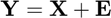,
where
![$\mathbf{X} = [\mathbf{x}(t_1),\ldots,\mathbf{x}(t_N)] = [\mathbf{x}_1,\ldots,\mathbf{x}_K]^T$](dynamic_causal_models2_eq15195809455161680973.png) ,
,
![$\mathbf{Y} = [\mathbf{y}(t_1),\ldots,\mathbf{y}(t_N)] = [\mathbf{y}_1,\ldots,\mathbf{y}_K]^T$](dynamic_causal_models2_eq07638385370877036024.png) ,
,
and 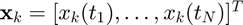 is the 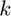'th state sequence and 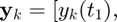 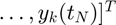 are the observations. Given the observations  and the description of the dynamical system (1), the aim is to estimate both state variables
and the description of the dynamical system (1), the aim is to estimate both state variables  and parameters 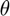.
and parameters 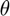.
We consider only dynamical systems that are locally linear with respect to ODE parameters  and individual states
and individual states  . Such ODEs include mass-action kinetics and are given by:
. Such ODEs include mass-action kinetics and are given by:
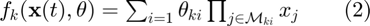,
with 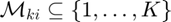 describing the state variables in each factor of the equation (i.e. the functions are linear in parameters and contain arbitrary large products of monomials of the states).
Simulate Trajectory Observations
Simulate state trajectories by numerical integration
non_diverging_trajectories = false; while ~non_diverging_trajectories symbols_simulation = importdata(['dcm/ODEs/' simulation.odes '_symbols.mat']); % symbols of parameters and states and in 'ODEs.txt' file ode_simulation = import_odes(symbols_simulation,simulation.odes); simulation.ode_param = -0.8 + (0.8-(-0.8)) * rand(1,length(symbols_simulation.param));% true non-selfinhibitory neuronal couplings (sampled uniformily in the interval [-0.8,0.8]; simulation.ode_param(end-2:end) = -1; % self-inhibitory neuronal couplings set to -1. state_orig = state; [state,time,ode_simulation,bold_response] = simulate_dynamics_by_numerical_integration(state,time,ode_simulation,simulation,symbols_simulation); if ~any(any(isnan(state.true))) && time.samp(end) > 1000; non_diverging_trajectories = 1; end end
Generate state observations
[state,time,obs_to_state_relation] = generate_state_observations(state,time,simulation,symbols);
% mean correction
bold_response.obs = bsxfun(@minus,bold_response.obs,mean(bold_response.obs,1));
Symbols
state.sym.mean = sym('n%d%d',[length(time.est),length(ode.system)]); state.sym.variance = sym('sigma%d%d',[length(time.est),length(ode.system)]); ode_param.sym.mean = sym('param%d',[length(symbols.param),1]); assume(ode_param.sym.mean,'real');
Setup plots
h_bold = setup_plots_for_bold_response_and_ext_input(state,bold_response,time,symbols); [h_states,h_param,p] = setup_plots_for_states(state,time,symbols);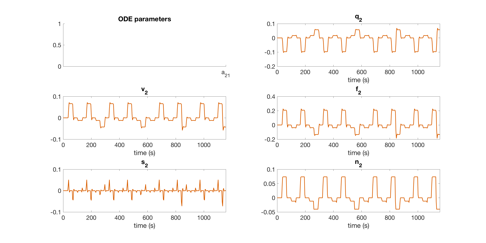
Prior on ODE parameters
Constuct prior on ODE parameters.
ode_param = prior_on_ODE_param(ode_param,param_prior_variance,symbols.param);% prior on ODE parameters
Confounding effects
BOLD response observations are given by the signal change equation plus an intercept due to confounding effects:
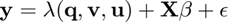
bold_response = confounding_effects(bold_response);
tic; %start timer
Prior on States and State Derivatives
Gradient matching with Gaussian processes assumes a joint Gaussian process prior on states and their derivatives:
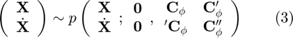,
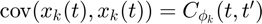
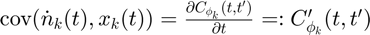

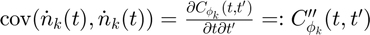.
Matching Gradients
Given the joint distribution over states and their derivatives (3) as well as the ODEs (2), we therefore have two expressions for the state derivatives:


where 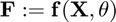,  and is the error variance in the ODEs. Note that, in a deterministic system, the output of the ODEs 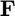 should equal the state derivatives
and is the error variance in the ODEs. Note that, in a deterministic system, the output of the ODEs 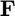 should equal the state derivatives  . However, in the first equation above we relax this contraint by adding stochasticity to the state derivatives in order to compensate for a potential model mismatch. The second equation above is obtained by deriving the conditional distribution for from the joint distribution in equation (3). Equating the two expressions in the equations above we can eliminate the unknown state derivatives :
. However, in the first equation above we relax this contraint by adding stochasticity to the state derivatives in order to compensate for a potential model mismatch. The second equation above is obtained by deriving the conditional distribution for from the joint distribution in equation (3). Equating the two expressions in the equations above we can eliminate the unknown state derivatives :
 ,
,
with  .
.
[dC_times_invC,inv_C,A_plus_gamma_inv] = kernel_function(kernel,state,time.est);

State Couplings in ODEs
coupling_idx = state_couplings_in_odes(ode,symbols);
Rewrite ODEs as Linear Combination in Parameters
We rewrite the ODEs in equation (2) as a linear combination in the parameters:
 ,
,
where matrices 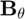 and 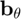 are defined such that the ODEs 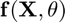 are expressed as a linear combination in .
[ode_param.lin_comb.B,ode_param.lin_comb.b] = rewrite_odes_as_linear_combination_in_parameters(ode,symbols);
Posterior over ODE Parameters
Inserting (5) into (4) and solving for yields:
 ,
,
where  denotes the pseudo-inverse of . We can therefore derive the posterior distribution over ODE parameters:
denotes the pseudo-inverse of . We can therefore derive the posterior distribution over ODE parameters:
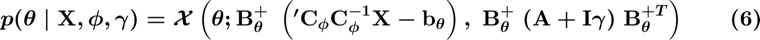.
state_enumeration = {'q','v','f','s','n'};
for u = 1:length(state_enumeration)
Rewrite Hemodynamic ODEs as Linear Combination in (monotonic functions of) Individual Hemodynamic States
We rewrite the ODE(s) 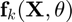 as a linear combination in the individual state  :
:
 .
.
where matrices  and
and  are defined such that the ODE is expressed as a linear combination in the individual state .
are defined such that the ODE is expressed as a linear combination in the individual state .
if strcmp(state_enumeration{u},'q')
Deoxyhemoglobin content
Rewrite the BOLD signal change equation as a linear combination in a monotonic function of the deoxyhemoglobin content 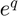.
 .
.
[state.deoxyhemo.R,state.deoxyhemo.r] = rewrite_bold_signal_eqn_as_linear_combination_in_deoxyhemo(symbols);
elseif strcmp(state_enumeration{u},'v')
Blood volume
Rewrite the deoxyhemoglobin content ODE as a linear combination in a monotonic function of the blood volume 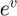.
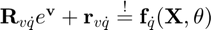.
[state.vol.R,state.vol.r] = rewrite_deoxyhemo_ODE_as_linear_combination_in_vol(ode,symbols);
elseif strcmp(state_enumeration{u},'f')
Blood flow
Rewrite the blood volume ODE as a linear combination in a monotonic function of the blood flow  .
.

[state.flow.R,state.flow.r] = rewrite_vol_ODE_as_linear_combination_in_flow(ode,symbols);
elseif strcmp(state_enumeration{u},'s')
Vasosignalling
Rewrite the blood flow and vasoginalling ODEs as a linear combination in vasosignalling 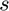.

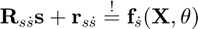
[state.vaso.R,state.vaso.r] = rewrite_vaso_and_flow_odes_as_linear_combination_in_vaso(ode,symbols);
Rewrite Neuronal ODEs as Linear Combination in Individual Neuronal States
We rewrite the ODE(s) as a linear combination in the individual state :
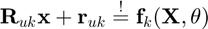
where matrices and are defined such that the expression is expressed as a linear combination in the individual state .
elseif strcmp(state_enumeration{u},'n') [state.neuronal.R,state.neuronal.r] = rewrite_odes_as_linear_combination_in_ind_neuronal_states(ode,symbols,coupling_idx.states); end
end
Posterior over Individual States
Inserting (7) into (4) and solving for yields:
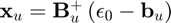,
where 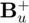 denotes the pseudo-inverse of 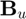. We can therefore derive the posterior distribution over an individual state :
 ,
,
with 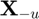 denoting the set of all states except state .
Mean-field Variational Inference
To infer the parameters , we want to find the maximum a posteriori estimate (MAP):
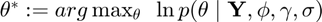

 .
.
However, the integral above is intractable due to the strong couplings induced by the nonlinear ODEs 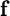 which appear in the term  .
.
We use mean-field variational inference to establish variational lower bounds that are analytically tractable by decoupling state variables from the ODE parameters as well as decoupling the state variables from each other. Note that, since the ODEs described by equation (2) are locally linear, both conditional distributions 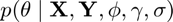 (equation (6)) and  (equation (8)) are analytically tractable and Gaussian distributed as mentioned previously.
(equation (8)) are analytically tractable and Gaussian distributed as mentioned previously.
The decoupling is induced by designing a variational distribution 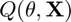 which is restricted to the family of factorial distributions:
 .
.
The particular form of 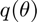 and  are designed to be Gaussian distributed which places them in the same family as the true full conditional distributions. To find the optimal factorial distribution we minimize the Kullback-Leibler divergence between the variational and the true posterior distribution:
are designed to be Gaussian distributed which places them in the same family as the true full conditional distributions. To find the optimal factorial distribution we minimize the Kullback-Leibler divergence between the variational and the true posterior distribution:
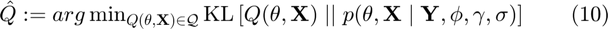,
where 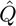 is the proxy distribution. The proxy distribution that minimizes the KL-divergence (10) depends on the true full conditionals and is given by:

 .
.
Denoising BOLD Observations
We denoise the BOLD observation by standard GP regression.
bold_response.denoised_obs = denoising_BOLD_observations(bold_response,inv_C,symbols,simulation.SNR);
Fitting Observations of State Trajectories
We fit the observations of state trajectories by standard GP regression. The data-informed distribution  in euqation (9) can be determined analytically using Gaussian process regression with the GP prior
in euqation (9) can be determined analytically using Gaussian process regression with the GP prior  :
:
 ,
,
where  and
and  .
.
[mu,inv_sigma] = fitting_state_observations(state,inv_C,obs_to_state_relation,symbols,simulation.SNR);
Coordinate Ascent Variational Gradient Matching
We locally minimize the KL-divergence in equation (10) by coordinate descent (where each step is analytically tractable) by iterating between determining the proxy for the distribution over ODE parameters 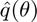 and the proxies for the distribution over individual states 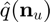.
bold_response.obs_old = bold_response.denoised_obs;
state_enumeration = {'q','v','f','s','n'};
state_enumeration(find(ismember(state_enumeration,simulation.observed_states))) = [];
ode_param.proxy.mean = zeros(length(symbols.param),1);
state.proxy.mean = mu;
for i=1:opt_settings.coord_ascent_numb_iter
Intercept due to Confounding Effects
The intercept is determined by a minimum least squares estimator:

vol_idx = cellfun(@(n) strcmp(n(2),'v'),symbols.state); deoxyhemo_idx = cellfun(@(n) strcmp(n(2),'q'),symbols.state); bold_response_signal_change = bold_signal_change_eqn(state.proxy.mean(:,vol_idx),state.proxy.mean(:,deoxyhemo_idx)); bold_response.confounding_effects.intercept = determine_intercept(bold_response.obs_old-bold_response_signal_change,... bold_response.confounding_effects.X0,bold_response.confounding_effects.X0_penrose_inv); bold_response.confounding_effects.intercept = zeros(size(bold_response.obs,1),size(bold_response.obs,2)); bold_response.denoised_obs = bold_response.obs_old - bold_response.confounding_effects.intercept;
for j = 1:length(state_enumeration)
Proxies for Hemodynamic States
Determine the proxies for the states, starting with deoxyhemoglobin followed by blood volume, blood flow and finally vasosignalling.
The information flow in the hemodynamic system is shown in its factor graph below:
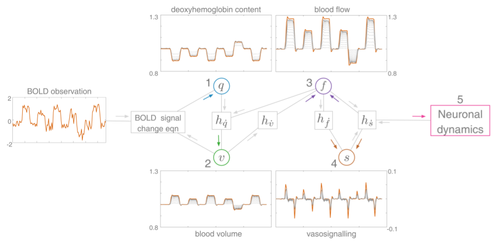
The model inversion in the hemodynmic factor graph above occurs locally w.r.t. individual states. Given the expression for the BOLD signal change equation, we invert the BOLD signal change equation analytically to determine the deoxyhemoglobin content 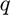 (1). The newly inferred deoxyhemoglobin content influences the expression for the factor associated with the change in deoxyhemoglobin content 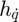, which we subsequently invert analytically to infer the blood volume 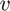 (2). Thereafter, we infer the blood flow 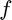 (3) by inverting the factors associated with the change in blood volume  as well as vasosignalling , followed by inferring vasosignalling (4) by inverting the factors associated with blood flow induction and vasosignalling . Finally, the neuronal dynamics (5) are learned, in part, by inverting the factor associated with vasosignalling . The typical trajectories of each of the states are shown (red) together with their iterative approximation (grey lines) obtained by graphical DCM.
as well as vasosignalling , followed by inferring vasosignalling (4) by inverting the factors associated with blood flow induction and vasosignalling . Finally, the neuronal dynamics (5) are learned, in part, by inverting the factor associated with vasosignalling . The typical trajectories of each of the states are shown (red) together with their iterative approximation (grey lines) obtained by graphical DCM.
if strcmp(state_enumeration{j},'q')
Proxy for deoxyhemolgobin content
state_idx = cellfun(@(n) strcmp(n(2),'q'),symbols.state); state_tmp = proxy_for_deoxyhemoglobin_content(state.deoxyhemo,state.proxy.mean,... bold_response.denoised_obs,symbols,A_plus_gamma_inv,opt_settings); state.proxy.mean(:,state_idx) = (1-damping) * state.proxy.mean(:,state_idx) + damping * state_tmp;
elseif strcmp(state_enumeration{j},'v')
Proxy for blood volume
state_idx = cellfun(@(n) strcmp(n(2),'v'),symbols.state); state_tmp = proxy_for_blood_volume(state.vol,dC_times_invC,state.proxy.mean,... ode_param.proxy.mean,symbols,A_plus_gamma_inv,opt_settings); state.proxy.mean(:,state_idx) = (1-damping) * state.proxy.mean(:,state_idx) + damping * state_tmp;
elseif strcmp(state_enumeration{j},'f')
Proxy for blood flow
state_idx = cellfun(@(n) strcmp(n(2),'f'),symbols.state); state_tmp = proxy_for_blood_flow(state.flow,dC_times_invC,state.proxy.mean,... ode_param.proxy.mean,symbols,A_plus_gamma_inv,opt_settings); state.proxy.mean(:,state_idx) = (1-damping) * state.proxy.mean(:,state_idx) + damping * state_tmp;
elseif strcmp(state_enumeration{j},'s')
Proxy for vasosignalling
state_idx = cellfun(@(n) strcmp(n(2),'s'),symbols.state); state.proxy.mean(:,state_idx) = proxy_for_vasosignalling(state.vaso,dC_times_invC,... state.proxy.mean,ode_param.proxy.mean,symbols,A_plus_gamma_inv,opt_settings);
elseif strcmp(state_enumeration{j},'n')
Proxies for Neuronal States
Determine the proxies for the neuronal states. An example of the information flow in the neuronal part of the nonlinear forward modulating (nonlin_fwd_mod) is shown in its factor graph below:

In the neuronal factor graph (for the nonlinear forwad modulation) above each individual state appears linear in every factor in the neuronal model. We can therefore analytically invert every factor to determine the neuronal state. The typical trajectories of each of the states are shown (red) together with their iterative approximation (grey lines) obtained by variational gradient matching.
state_idx = cellfun(@(n) strcmp(n(2),'n'),symbols.state); state.proxy.mean(:,state_idx) = proxy_for_neuronal_populations(state.neuronal,... state.proxy.mean,ode_param.proxy.mean',dC_times_invC,coupling_idx.states,symbols,... A_plus_gamma_inv,opt_settings);
end
state.proxy.mean(:,1:15) = bsxfun(@minus,state.proxy.mean(:,1:15),state.proxy.mean(1,1:15));
end if i==1 || ~mod(i,20); plot_results_for_states(h_states,h_param,state,time,simulation,ode_param.proxy.mean,symbols,candidate_odes,p); end


Proxy for neuronal couplings (ODE parameters)
if i>200 || i==opt_settings.coord_ascent_numb_iter [ode_param.proxy.mean,ode_param.proxy.inv_cov] = proxy_for_ode_parameters(state.proxy.mean,... dC_times_invC,ode_param.lin_comb,symbols,ode_param,A_plus_gamma_inv,opt_settings); end
end
Numerical integration with parameters estimated by variational gradient matching
See whether we actually fit the BOLD response well. Curves are shown in black.
[state,bold_response] = simulate_trajectory_with_vgm_param_est(ode_param,state,state_orig,bold_response,simulation,time,ode,symbols);
Final result
plot_results_for_bold_response(h_bold,bold_response,time); plot_results_for_states(h_states,h_param,state,time,simulation,ode_param.proxy.mean,symbols,candidate_odes,p);
Time Taken
disp(['time taken: ' num2str(toc) ' seconds'])
time taken: 158.1715 seconds
References
- Gorbach, X.S. , Bauer, S. and Buhmann, J.M., Scalable Variational Inference for Dynamical Systems. 2017a. Neural Information Processing Systems (NIPS). https://papers.nips.cc/paper/7066-scalable-variational-inference-for-dynamical-systems.pdf, arxiv: https://arxiv.org/abs/1705.07079.
- Bauer, S. , Gorbach, X.S. and Buhmann, J.M., Efficient and Flexible Inference for Stochastic Differential Equations. 2017b. Neural Information Processing Systems (NIPS). https://papers.nips.cc/paper/7274-efficient-and-flexible-inference-for-stochastic-systems.pdf
- Wenk, P., Gotovos, A., Bauer, S., Gorbach, X.S., Krause, A. and Buhmann, J.M., Fast Gaussian Process Based Gradient Matching for Parameters Identification in Systems of Nonlinear ODEs. 2018. In submission to Conference on Uncertainty in Artificial Intelligence (UAI).
- Calderhead, B., Girolami, M. and Lawrence. X.D., 2002. Accelerating Bayesian inference over nonlinear differential equation models. In Advances in Neural Information Processing Systems (NIPS) . 22.
The authors in bold font have contributed equally to their respective papers.
Subroutines
Kernel function
Gradient matching with Gaussian processes assumes a joint Gaussian process prior on states and their derivatives:
,
.
function [dC_times_invC,inv_C,A_plus_gamma_inv] = kernel_function(kernel,state,time_est) kernel.param_sym = sym('rbf_param%d',[1,2]); assume(kernel.param_sym,'real'); kernel.time1 = sym('time1'); assume(kernel.time1,'real'); kernel.time2 = sym('time2'); assume(kernel.time2,'real'); kernel.func = kernel.param_sym(1).*exp(-(kernel.time1-kernel.time2).^2./(kernel.param_sym(2).^2)); % RBF kernel kernel.name = 'rbf'; % kernel derivatives for i = 1:length(kernel) kernel.func_d = diff(kernel.func,kernel.time1); kernel.func_dd = diff(kernel.func_d,kernel.time2); GP.fun = matlabFunction(kernel.func,'Vars',{kernel.time1,kernel.time2,kernel.param_sym}); GP.fun_d = matlabFunction(kernel.func_d,'Vars',{kernel.time1,kernel.time2,kernel.param_sym}); GP.fun_dd = matlabFunction(kernel.func_dd,'Vars',{kernel.time1,kernel.time2,kernel.param_sym}); end % populate GP covariance matrix for t=1:length(time_est) C(t,:)=GP.fun(time_est(t),time_est,kernel.param); dC(t,:)=GP.fun_d(time_est(t),time_est,kernel.param); Cd(t,:)=GP.fun_d(time_est,time_est(t),kernel.param); ddC(t,:)=GP.fun_dd(time_est(t),time_est,kernel.param); end % GP covariance scaling [~,D] = eig(C); perturb = abs(max(diag(D))-min(diag(D))) / 10000; if any(diag(D)<1e-6); C(logical(eye(size(C,1)))) = C(logical(eye(size(C,1)))) + perturb.*rand(size(C,1),1); end [~,D] = eig(C); if any(diag(D)<0); error('C has negative eigenvalues!'); elseif any(diag(D)<1e-6); warning('C is badly scaled'); end inv_C = inv_chol(chol(C,'lower')); dC_times_invC = dC * inv_C; % plot GP prior samples figure(3); hold on; plot(time_est,mvnrnd(zeros(1,length(time_est)),C(:,:,1),3),'LineWidth',2); h1 = gca; h1.FontSize = 20; h1.XLabel.String = 'time (s)'; h1.YLabel.String = 'state value'; h1.Title.String = [kernel.name ' kernel']; % determine A_plus_gamma: A = ddC - dC_times_invC * Cd; A_plus_gamma = A + state.derivative_variance(1) .* eye(size(A)); A_plus_gamma = 0.5.*(A_plus_gamma+A_plus_gamma'); % ensure that A plus gamma is symmetric A_plus_gamma_inv = inv_chol(chol(A_plus_gamma,'lower')); end
Denoising BOLD observations
We denoise the BOLD observation by standard GP regression.
,
where and .
function [mu,inv_sigma] = denoising_BOLD_observations(bold_response,inv_Cxx,symbols,SNR) inv_Cxx_cell = num2cell(inv_Cxx(:,:,ones(1,sum(cellfun(@(n) strcmp(n(2),'n'),symbols.state)))),[1,2]); inv_Cxx_blkdiag = blkdiag(inv_Cxx_cell{:}); b = repmat(var(bold_response.obs)./SNR,size(bold_response.obs,1),1); dim = size(inv_Cxx_blkdiag,1); D = spdiags(reshape(b.^(-1),[],1),0,dim,dim) * speye(dim); % covariance matrix of error term (big E) inv_sigma = D + inv_Cxx_blkdiag; mu = inv_sigma \ D * reshape(bold_response.obs,[],1); mu = reshape(mu,[],size(bold_response.obs,2)); end
Fitting state observations
We fit the observations of state trajectories by standard GP regression.
function [mu_u,inv_sigma_u] = fitting_state_observations(state,inv_C,obs_to_state_relation,symbols,SNR) state_obs_variance = 1e0*repmat(var(state.obs) ./ SNR,size(state.obs,1),1); numb_states = size(state.sym.mean,2); numb_time_points = size(state.sym.mean,1); inv_Cxx_tmp = num2cell(inv_C(:,:,ones(1,numb_states)),[1,2]); inv_Cxx_blkdiag = sparse(blkdiag(inv_Cxx_tmp{:})); dim = size(state_obs_variance,1)*size(state_obs_variance,2); D = spdiags(reshape(state_obs_variance.^(-1),[],1),0,dim,dim) * speye(dim); % covariance matrix of error term (big E) A_times_D_times_A = obs_to_state_relation' * D * obs_to_state_relation; inv_sigma = A_times_D_times_A + inv_Cxx_blkdiag; mu = inv_sigma \ obs_to_state_relation' * D * reshape(state.obs,[],1); mu_u = zeros(numb_time_points,numb_states); for u = 1:numb_states idx = (u-1)*numb_time_points+1:(u-1)*numb_time_points+numb_time_points; mu_u(:,u) = mu(idx); end inv_sigma_u = zeros(numb_time_points,numb_time_points,numb_states); for i = 1:numb_states idx = [(i-1)*numb_time_points+1:(i-1)*numb_time_points+numb_time_points]; inv_sigma_u(:,:,i) = inv_sigma(idx,idx); end % external_input ext_input_idx = cellfun(@(n) strcmp(n(2),'u'),symbols.state); mu_u(:,ext_input_idx) = state.ext_input(state.ext_input_to_bold_response_mapping_idx,2:end); end
State couplings in ODEs
function coupling_idx = state_couplings_in_odes(ode,symbols) state_sym = sym('state%d',[1,length(ode.system)]); assume(state_sym,'real'); for k = 1:length(ode.system) tmp_idx = ismember(state_sym,symvar(ode.system_sym(k))); tmp_idx(:,k) = 1; ode_couplings_states(k,tmp_idx) = 1; end for u = find(cellfun(@(x) ~strcmp(x(2),'u'),symbols.state)) coupling_idx.states{u} = find(ode_couplings_states(:,u)); end end
Rewrite ODEs as linear combination in ODE parameters
,
where matrices and are defined such that the ODEs are expressed as a linear combination in .
function [B,b] = rewrite_odes_as_linear_combination_in_parameters(ode,symbols) param_sym = sym('param%d',[1,length(symbols.param)]); assume(param_sym,'real'); state_sym = sym('state%d',[1,length(symbols.state)]); assume(state_sym,'real'); state0_sym = sym('state0'); assume(state0_sym,'real'); state_const_sym = sym('state_const'); assume(state_const_sym,'real'); % Rewrite ODEs as linear combinations in parameters [B_sym,b_sym] = equationsToMatrix(ode.system_sym,param_sym); b_sym = -b_sym; % See the documentation of the function "equationsToMatrix" % Product of ODE factors (product of Gaussians) for k = 1:length(ode.system) B_sym(k,B_sym(k,:)=='0') = state0_sym; for i = 1:length(B_sym(k,:)) sym_var = symvar(B_sym(k,i)); if isempty(sym_var) B_sym(k,i) = B_sym(k,i) + state0_sym; end end B{k} = matlabFunction(B_sym(k,:),'Vars',{state_sym,state0_sym,state_const_sym}); b{k} = matlabFunction(b_sym(k,:),'Vars',{state_sym,state0_sym,state_const_sym}); end end
Rewrite ODEs as linear combination in monotonic function of deoxyhemoglobin content e^q
.
function [R,r] = rewrite_bold_signal_eqn_as_linear_combination_in_deoxyhemo(symbols) % define symbolic variables param_sym = sym('param%d',[1,length(symbols.param)]); assume(param_sym,'real'); state_sym = sym('state%d',[1,length(symbols.state)]); assume(state_sym,'real'); v = sym('v'); assume(v,'real'); q = sym('q'); assume(q,'real'); exp_q = sym('exp_q'); assume(exp_q,'real'); % bold signal change equation bold_signal_change = bold_signal_change_eqn(v,q); [R_sym,r_sym] = equationsToMatrix(subs(bold_signal_change,exp(q),exp_q),exp_q); r_sym = -r_sym; % See the documentation of the function "equationsToMatrix" R = matlabFunction(R_sym,'Vars',{v,q}); r = matlabFunction(r_sym,'Vars',{v,q}); end
Rewrite ODEs as linear combination in monotonic function of blood volume e^v
.
function [R,r] = rewrite_deoxyhemo_ODE_as_linear_combination_in_vol(ode,symbols) % define symbolic variables param_sym = sym('param%d',[1,length(symbols.param)]); assume(param_sym,'real'); state_sym = sym('state%d',[1,length(symbols.state)]); assume(state_sym,'real'); exp_v = sym('exp_v'); assume(exp_v,'real'); state_idx = find(cellfun(@(n) strcmp(n(2),'v'),symbols.state)); % deoxyhemoglobin ODE ode_idx = find(cellfun(@(n) strcmp(n(2),'q'),symbols.state)); j = 0; for u = state_idx j = j+1; [R_sym,r_sym] = equationsToMatrix(subs(ode.system{ode_idx(j)}(state_sym,param_sym),exp((17*state_sym(u)/8)),exp_v),exp_v); r_sym = -r_sym; % See the documentation of the function "equationsToMatrix" R{u} = matlabFunction(R_sym,'Vars',{state_sym,param_sym}); r{u} = matlabFunction(r_sym,'Vars',{state_sym,param_sym}); end end
Rewrite ODEs as linear combination in monotonic function of blood flow e^f
function [R,r] = rewrite_vol_ODE_as_linear_combination_in_flow(ode,symbols) % define symbolic variables param_sym = sym('param%d',[1,length(symbols.param)]); assume(param_sym,'real'); state_sym = sym('state%d',[1,length(symbols.state)]); assume(state_sym,'real'); exp_f = sym('exp_f'); assume(exp_f,'real'); state_idx = find(cellfun(@(n) strcmp(n(2),'f'),symbols.state)); % blood volume ODE ode_idx = find(cellfun(@(n) strcmp(n(2),'v'),symbols.state)); j = 0; for u = state_idx j = j+1; [R_sym,r_sym] = equationsToMatrix(subs(ode.system{ode_idx(j)}(state_sym,param_sym),exp(state_sym(u)),exp_f),exp_f); r_sym = -r_sym; % See the documentation of the function "equationsToMatrix" R{u} = matlabFunction(R_sym,'Vars',{state_sym,param_sym}); r{u} = matlabFunction(r_sym,'Vars',{state_sym,param_sym}); end end
Rewrite ODEs as linear combination in vasosignalling s
function [R,r] = rewrite_vaso_and_flow_odes_as_linear_combination_in_vaso(ode,symbols) % define symbolic variables param_sym = sym('param%d',[1,length(symbols.param)]); assume(param_sym,'real'); state_sym = sym('state%d',[1,length(symbols.state)]); assume(state_sym,'real'); state_idx = find(cellfun(@(n) strcmp(n(2),'s'),symbols.state)); % vasosignaling ODE ode_idx = find(cellfun(@(n) strcmp(n(2),'s'),symbols.state)); j = 0; for u = state_idx j = j+1; [R_sym,r_sym] = equationsToMatrix(ode.system{ode_idx(j)}(state_sym,param_sym),state_sym(u)); r_sym = -r_sym; % See the documentation of the function "equationsToMatrix" R{u}.vaso = matlabFunction(R_sym,'Vars',{state_sym,param_sym}); r{u}.vaso = matlabFunction(r_sym,'Vars',{state_sym,param_sym}); end % blood flow ODE ode_idx = find(cellfun(@(n) strcmp(n(2),'f'),symbols.state)); j = 0; for u = state_idx j = j+1; [R_sym,r_sym] = equationsToMatrix(ode.system{ode_idx(j)}(state_sym,param_sym),state_sym(u)); r_sym = -r_sym; % See the documentation of the function "equationsToMatrix" R{u}.flow = matlabFunction(R_sym,'Vars',{state_sym,param_sym}); r{u}.flow = matlabFunction(r_sym,'Vars',{state_sym,param_sym}); end end
Rewrite ODEs as linear combination in neuronal states n
function [R,r]= rewrite_odes_as_linear_combination_in_ind_neuronal_states(ode,symbols,coupling_idx) state_sym = sym('state%d',[1,length(symbols.state)]); assume(state_sym,'real'); param_sym = sym('param%d',[1,length(symbols.param)]); assume(param_sym,'real'); state_idx = find(cellfun(@(n) strcmp(n(2),'n'),symbols.state)); for u = state_idx for k = coupling_idx{u}' [R_sym,r_sym] = equationsToMatrix(ode.system{k}(state_sym,param_sym'),state_sym(:,u)); r_sym = -r_sym; % See the documentation of the function "equationsToMatrix" R{u,k} = matlabFunction(R_sym,'Vars',{state_sym,param_sym}); r{u,k} = matlabFunction(r_sym,'Vars',{state_sym,param_sym}); end end end
Proxy for ODE parameters
,
function [param_proxy_mean,param_proxy_inv_cov] = proxy_for_ode_parameters(state_proxy_mean,... dC_times_invC,lin_comb,symbols,ode_param,A_plus_gamma_inv,opt_settings) % Initialize state0 = zeros(size(dC_times_invC,1),1); param_proxy_inv_cov = zeros(length(symbols.param)); global_scaling = zeros(length(symbols.param)); global_mean = zeros(length(symbols.param),1); % Iteratate through ODEs for k = 1: 1:sum(cellfun(@(n) ~strcmp(n(2),'u'),symbols.state)) B = lin_comb.B{k}(state_proxy_mean,state0,ones(size(state_proxy_mean,1),1)); b = lin_comb.b{k}(state_proxy_mean,state0,ones(size(state_proxy_mean,1),1)); % local if strcmp(opt_settings.pseudo_inv_type,'Moore-Penrose') local_mean = B' * (dC_times_invC * state_proxy_mean(:,k) - b); local_scaling = B' * B; local_inv_cov = B' * A_plus_gamma_inv * B; elseif strcmp(opt_settings.pseudo_inv_type,'modified Moore-Penrose') local_mean = B' * A_plus_gamma_inv * (dC_times_invC * state_proxy_mean(:,k) - b); local_scaling = B' * A_plus_gamma_inv * B; local_inv_cov = local_scaling; end % global global_mean = global_mean + local_mean; global_scaling = global_scaling + local_scaling; % Inverse covariance for ODE param proxy distribution param_proxy_inv_cov = param_proxy_inv_cov + local_inv_cov; end if isfield(ode_param,'prior') global_mean = global_mean + ode_param.prior.inv_cov*ode_param.prior.mean; global_scaling = global_scaling + ode_param.prior.inv_cov; param_proxy_inv_cov = param_proxy_inv_cov + ode_param.prior.inv_cov; end % Check consistency of covariance matrix [~,D] = eig(param_proxy_inv_cov); if any(diag(D)<0) warning('ode_param.proxy.inv_cov has negative eigenvalues!'); elseif any(diag(D)<1e-3) warning('ode_param.proxy.inv_cov is badly scaled') disp('perturbing diagonal of ode_param.proxy.inv_cov') perturb = abs(max(diag(D))-min(diag(D))) / 10000; param_proxy_inv_cov(logical(eye(size(param_proxy_inv_cov,1)))) = param_proxy_inv_cov(logical(eye(size(param_proxy_inv_cov,1)))) ... + perturb.*rand(size(param_proxy_inv_cov,1),1); end % Mean of parameter proxy distribution param_proxy_mean = global_scaling \ global_mean; end
Warning: ode_param.proxy.inv_cov is badly scaled perturbing diagonal of ode_param.proxy.inv_cov
Proxy for deoxyhemoglobin content
function deoxyhemo_proxy_mean = proxy_for_deoxyhemoglobin_content(deoxyhemo,state,... bold_response_obs,symbols,A_plus_gamma_inv,opt_settings) state_idx = find(cellfun(@(x) strcmp(x(2),'q'),symbols.state)); state_partner_idx = find(cellfun(@(x) strcmp(x(2),'v'),symbols.state)); j = 0; % Iterate through states for u = state_idx % unpack matrices B and b j = j+1; R = diag(deoxyhemo.R(state(:,state_partner_idx(j)))); r = deoxyhemo.r(state(:,state_partner_idx(j))); B = R; b = r - bold_response_obs(:,u); if strcmp(opt_settings.pseudo_inv_type,'Moore-Penrose') local_mean = -B' * b; local_scaling = B' * B; local_inv_cov = B' * A_plus_gamma_inv * B; elseif strcmp(opt_settings.pseudo_inv_type,'modified Moore-Penrose') local_mean = -B' * A_plus_gamma_inv * b; local_scaling = B' * A_plus_gamma_inv * B; local_inv_cov = local_scaling; end deoxyhemo_proxy_mean(:,u) = log(local_scaling \ local_mean); % Check if deoxyhemoglobin content is positive if any(~isreal(deoxyhemo_proxy_mean(:,u))) disp('warning: deoxyhemoglobin content is not positive') deoxyhemo_proxy_mean(:,u) = real(deoxyhemo_proxy_mean(:,u)); end end end
Proxy for blood volume
function vol_proxy_mean = proxy_for_blood_volume(vol,dC_times_invC,state_proxy_mean,ode_param,symbols,... A_plus_gamma_inv,opt_settings) state_idx = find(cellfun(@(x) strcmp(x(2),'v'),symbols.state)); state_partner_idx = find(cellfun(@(x) strcmp(x(2),'q'),symbols.state)); j = 0; % Iteratate through states for u = state_idx
% unpack matrices B and b j = j+1; R = diag(vol.R{u}(state_proxy_mean,ode_param')); r = vol.r{u}(state_proxy_mean,ode_param); if size(R,1) == 1; R = R.*eye(size(dC_times_invC,1)); end
Define matrices B and b such that 
B = R;
b = r - dC_times_invC * state_proxy_mean(:,state_partner_idx(j));
if strcmp(opt_settings.pseudo_inv_type,'Moore-Penrose')
local_mean = -B' * b;
local_scaling = B' * B;
local_inv_cov = B' * A_plus_gamma_inv * B;
elseif strcmp(opt_settings.pseudo_inv_type,'modified Moore-Penrose')
local_mean = -B' * A_plus_gamma_inv * b;
local_scaling = B' * A_plus_gamma_inv * B;
local_inv_cov = local_scaling;
end
vol_proxy_mean(:,j) = (8/17) * log(local_scaling \ local_mean);
% Check if blood volume is positive
if any(~isreal(vol_proxy_mean(:,j)))
disp('warning: blood volume is not positive')
vol_proxy_mean(:,j) = real(vol_proxy_mean(:,j));
end
end end
Proxy for blood flow
function flow_proxy_mean = proxy_for_blood_flow(flow,dC_times_invC,... state_proxy_mean,ode_param,symbols,A_plus_gamma_inv,opt_settings) state_idx = find(cellfun(@(x) strcmp(x(2),'f'),symbols.state)); state_partner_idx = find(cellfun(@(x) strcmp(x(2),'s'),symbols.state)); j = 0; for u = state_idx
% unpack matrices B and b j = j+1; R = diag(flow.R{u}(state_proxy_mean,ode_param')); r = flow.r{u}(state_proxy_mean,ode_param); if size(R,1) == 1; R = R.*eye(size(dC_times_invC,1)); end
Define matrices B and b such that
B = R;
b = r - dC_times_invC * state_proxy_mean(:,state_partner_idx(j));
if strcmp(opt_settings.pseudo_inv_type,'Moore-Penrose')
local_mean = -B' * b;
local_scaling = B' * B;
local_inv_cov = B' * A_plus_gamma_inv * B;
elseif strcmp(opt_settings.pseudo_inv_type,'modified Moore-Penrose')
local_mean = -B' * A_plus_gamma_inv * b;
local_scaling = B' * A_plus_gamma_inv * B;
local_inv_cov = local_scaling;
end
flow_proxy_mean(:,j) = log(local_scaling \ local_mean);
% Check if the blood flow is positive
if any(~isreal(flow_proxy_mean))
disp('warning: blood flow is not positive')
flow_proxy_mean(:,j) = real(flow_proxy_mean(:,j));
end
end end
Proxy for vasosignalling
function [vaso_proxy_mean,vaso_proxy_inv_cov] = proxy_for_vasosignalling(vaso,dC_times_invC,... state_proxy_mean,ode_param,symbols,A_plus_gamma_inv,opt_settings) state_idx = find(cellfun(@(x) strcmp(x(2),'s'),symbols.state)); state_partner_idx = find(cellfun(@(x) strcmp(x(2),'f'),symbols.state)); j = 0; for u = state_idx
j = j+1;
% Initialize
global_scaling = zeros(size(dC_times_invC,1),1);
global_mean = zeros(size(dC_times_invC,1),1);
% local
% unpack matrices B and b for vasosignalling ODE
R = diag(vaso.R{u}.vaso(state_proxy_mean,ode_param'));
r = vaso.r{u}.vaso(state_proxy_mean,ode_param);
if size(R,1) == 1; R = R.*eye(size(dC_times_invC,1)); end
if size(r,1) == 1; r = r.*zeros(size(dC_times_invC,1),1); end
Define matrices B and b such that
B = R - dC_times_invC;
b = r;
if strcmp(opt_settings.pseudo_inv_type,'Moore-Penrose') local_mean.vaso = -B' * b; local_scaling.vaso = B' * B; local_inv_cov.vaso = B' * A_plus_gamma_inv * B; elseif strcmp(opt_settings.pseudo_inv_type,'modified Moore-Penrose') local_mean.vaso = -B' * b; local_scaling.vaso = B' * A_plus_gamma_inv * B; local_inv_cov.vaso = local_scaling.vaso; end % local % unpack matrices B and b for blood flow ODE R = diag(vaso.R{u}.flow(state_proxy_mean,ode_param')); r = vaso.r{u}.flow(state_proxy_mean,ode_param); if size(R,1) == 1; R = R.*eye(size(dC_times_invC,1)); end if size(r,1) == 1; r = r.*zeros(size(dC_times_invC,1),1); end
Define matrices B and b such that
B = R;
b = r - dC_times_invC * state_proxy_mean(:,state_partner_idx(j));
if strcmp(opt_settings.pseudo_inv_type,'Moore-Penrose') local_mean.flow = -B' * b; local_scaling.flow = B' * B; local_inv_cov.flow = B' * A_plus_gamma_inv * B; elseif strcmp(opt_settings.pseudo_inv_type,'modified Moore-Penrose') local_mean.flow = -B' * A_plus_gamma_inv * b; local_scaling.flow = B' * A_plus_gamma_inv * B; local_inv_cov.flow = local_scaling.flow; end % global global_mean = local_mean.vaso + local_mean.flow; global_scaling = local_scaling.vaso + local_scaling.flow; % Mean of state proxy distribution vaso_proxy_mean(:,j) = global_scaling \ global_mean; % Inverse covariance for state proxy distribution vaso_proxy_inv_cov(:,:,u) = local_inv_cov.vaso + local_inv_cov.flow;
end end
Proxy for neuronal populations
function [neuronal_proxy_mean,neuronal_proxy_inv_cov] = proxy_for_neuronal_populations(neuronal,... state_proxy_mean,ode_param,dC_times_invC,coupling_idx,symbols,A_plus_gamma_inv,opt_settings) state_idx = find(cellfun(@(x) strcmp(x(2),'n'),symbols.state)); j = 0; for u = state_idx j = j+1; % Initialize neuronal_proxy_inv_cov(:,:,u) = zeros(size(dC_times_invC)); global_scaling = zeros(size(dC_times_invC,1),1); global_mean = zeros(size(dC_times_invC,1),1); for k = coupling_idx{u}'
% unpack matrices B and b R = diag(neuronal.R{u,k}(state_proxy_mean,ode_param)); r = neuronal.r{u,k}(state_proxy_mean,ode_param); if size(R,1) == 1; R = R.*eye(size(dC_times_invC,1)); end
Define matrices B and b such that
if k~=u B = R; b = r - dC_times_invC * state_proxy_mean(:,k); else B = R - dC_times_invC; b = r; end % local if strcmp(opt_settings.pseudo_inv_type,'Moore-Penrose') local_mean = -B' * b; local_scaling = B' * B; local_inv_cov = B' * A_plus_gamma_inv * B; elseif strcmp(opt_settings.pseudo_inv_type,'modified Moore-Penrose') local_mean = -B' * A_plus_gamma_inv * b; local_scaling = B' * A_plus_gamma_inv * B; local_inv_cov = local_scaling; end % global global_mean = global_mean + local_mean; global_scaling = global_scaling + local_scaling; % Inverse covariance for state proxy distribution neuronal_proxy_inv_cov(:,:,u) = neuronal_proxy_inv_cov(:,:,u) + local_inv_cov;
end % Mean of state proxy distribution neuronal_proxy_mean(:,j) = global_scaling \ global_mean; end end
Prior on neuronal couplings
The prior variance on all non-selfinhibitory neuronal couplings is infinity.
function ode_param = prior_on_ODE_param(ode_param,param_prior,param_symbols) numb_states = 3; ode_param.prior.mean = zeros(length(param_symbols),1); ode_param.prior.mean(end-numb_states+1:end) = -1; tmp = param_prior*ones(1,length(param_symbols)); tmp(end-numb_states+1:end) = 1e-9; ode_param.prior.inv_cov = diag(tmp.^(-1)); end
Confounding effects
function bold_response = confounding_effects(bold_response) bold_response.confounding_effects.X0 = importdata('dcm/confounding_effects_X0.txt'); bold_response.confounding_effects.beta = importdata('dcm/confounding_effects_beta.txt'); bold_response.confounding_effects.X0_penrose_inv = (bold_response.confounding_effects.X0' * ... bold_response.confounding_effects.X0)^(-1) * bold_response.confounding_effects.X0'; bold_response.confounding_effects.intercept = ones(size(bold_response.obs)); end
Import ODEs
function ode = import_odes(symbols,candidate_odes) path_ode = ['./dcm/ODEs/' candidate_odes '.txt']; % path to candidtae system of ODEs ode.raw = importdata(path_ode); ode.refined = ode.raw; for k = 1:length(ode.refined) for u = 1:length(symbols.state); ode.refined{k} = strrep(ode.refined{k},[symbols.state{u}],['state(:,' num2str(u) ')']); end for j = 1:length(symbols.param); ode.refined{k} = strrep(ode.refined{k},symbols.param{j},['param(' num2str(j) ')']); end end for k = 1:length(ode.refined); ode.system{k} = str2func(['@(state,param)(' ode.refined{k} ')']); end end
Simulate state trajectories by numerical integration
function [state,time,ode,bold_response] = simulate_dynamics_by_numerical_integration(state,time,ode,simulation,symbols) param_sym = sym('param%d',[1,length(symbols.param)]); assume(param_sym,'real'); state_sym = sym('state%d',[1,length(symbols.state)]); assume(state_sym,'real'); for i = 1:length(ode.system) ode.system_sym(i) = ode.system{i}(state_sym,param_sym); end idx0 = cellfun(@(n) ~strcmp(n(2),'u'),symbols.state); learn_method.state(idx0) = {'Laplace mean-field'}; learn_method.state(~idx0) = {'external input'}; state.obs_idx = zeros(1,sum(idx0)); state.init_val = zeros(1,sum(idx0)); % init_val = 0.01*ones(1,sum(idx0)); % dt = state.ext_input(end,1) - state.ext_input(end-1,1); ode_system_mat = matlabFunction(ode.system_sym','Vars',{state_sym(~strcmp(learn_method.state,'external input'))',... param_sym',state_sym(strcmp(learn_method.state,'external input'))'}); ode_param_true = simulation.ode_param'; % warning ('off','all'); [ToutX,OutX_solver] = ode113(@(t,n) ode_function(t,n,ode_system_mat,ode_param_true,state.ext_input(:,2:end),state.ext_input(:,1)),... state.ext_input(:,1), init_val); % warning ('on','all'); [~,idx] = min(pdist2(ToutX,state.ext_input(:,1)),[],1); ToutX = ToutX(idx); OutX_solver = OutX_solver(idx,:); % pack [~,state.ext_input_to_bold_response_mapping_idx] = min(pdist2(state.ext_input(:,1),time.est'),[],1); state.true = OutX_solver(state.ext_input_to_bold_response_mapping_idx,:); state.true(1:5,:) = 0; time.true = ToutX'; time.samp = time.true(state.ext_input_to_bold_response_mapping_idx); % true bold responses bold_response.true = bold_signal_change_eqn(state.true(:,cellfun(@(n) strcmp(n(2),'v'),symbols.state)),state.true(:,cellfun(@(n) strcmp(n(2),'q'),symbols.state))); % mean correction % bold_response.confounding_effects.intercept = mean(bold_response.true,1); % bold_response.true = bsxfun(@minus,bold_response.true,mean(bold_response.true,1)); % % bold_response.confounding_effects.X0 = ones(size(bold_response.true)); % observed bold responses bold_response.obs = bold_response.true + bsxfun(@times,sqrt(var(bold_response.true) ./ simulation.SNR),randn(size(bold_response.true))); bold_response.confounding_effects.intercept = mean(bold_response.obs,1); bold_response.variance = (repmat(max(bold_response.obs,[],1),size(bold_response.obs,1),1)./simulation.SNR).^2; % pack state.obs = state.true(:,find(state.obs_idx)); % align externel input with observations shift_num = 1; e = state.ext_input; e(shift_num+1:end,2:end) = state.ext_input(1:end-shift_num,2:end); e(1:shift_num,2:end) = zeros(shift_num,size(state.ext_input,2)-1); state.ext_input = e; end
Simulate state trajectories by numerical integration with parameters estimated by variational gradient matching
function [state,bold_response] = simulate_trajectory_with_vgm_param_est(ode_param,state,state_orig,bold_response,simulation,time,ode,symbols) bold_response.prediction.num_int_with_gm_param_est = []; state_orig.init_val = state.proxy.mean(1,cellfun(@(x) ~strcmp(x(2),'u'),symbols.state)); simulation.ode_param = ode_param.proxy.mean'; state_sim = simulate_dynamics_by_numerical_integration(state_orig,time,ode,simulation,symbols); state.num_int_with_gm_param_est = state_sim.true; % bold_response_signal_change = bold_signal_change_eqn(state.num_int_with_gm_param_est(:,cellfun(@(n) strcmp(n(2),'v'),symbols.state)),... state.num_int_with_gm_param_est(:,cellfun(@(n) strcmp(n(2),'q'),symbols.state))); bold_response.confounding_effects.intercept = determine_intercept(bold_response.obs_old-bold_response_signal_change,... bold_response.confounding_effects.X0,bold_response.confounding_effects.X0_penrose_inv); bold_response.prediction.num_int_with_gm_param_est = bold_response_signal_change + bold_response.confounding_effects.intercept; % state.num_int_with_gm_param_est(1,:) = []; state.num_int_with_gm_param_est(end+1,:) = zeros(1,size(state.num_int_with_gm_param_est,2)); bold_response.prediction.num_int_with_gm_param_est(1,:) = []; bold_response.prediction.num_int_with_gm_param_est(end+1,:) = zeros(1,size(bold_response.prediction.num_int_with_gm_param_est,2)); end
Generate observations of states
function [state,time,obs_to_state_relation] = generate_state_observations(state,time,simulation,symbols) % State observations tmp = cellfun(@(x) {strcmp(x(2),simulation.observed_states)},symbols.state); state.obs_idx = cellfun(@(x) any(x),tmp); state.obs_idx(cellfun(@(x) strcmp(x(2),'u'),symbols.state)) = []; state.obs = state.true(:,state.obs_idx) + sqrt(var(state.true(:,state.obs_idx)) ./ simulation.SNR) .* randn(size(state.true(:,state.obs_idx))); % Relationship between states and observations if length(simulation.time_samp) < length(time.est) time.idx = munkres(pdist2(time.samp',time.est')); time.ind = sub2ind([length(time.samp),length(time.est)],1:length(time.samp),time.idx); else time.idx = munkres(pdist2(time.est',time.samp')); time.ind = sub2ind([length(time.est),length(time.samp)],1:length(time.est),time.idx); end time.obs_time_to_state_time_relation = zeros(length(time.samp),length(time.est)); time.obs_time_to_state_time_relation(time.ind) = 1; state_mat = eye(size(state.true,2)); state_mat(~logical(state.obs_idx),:) = []; obs_to_state_relation = sparse(kron(state_mat,time.obs_time_to_state_time_relation)); end
ODE function
function state_derivatives = ode_function(time,states,ode_system_mat,ode_param,ext_input,time_lst) [~,idx] = min(pdist2(time,time_lst)); u = ext_input(idx,:); state_derivatives = ode_system_mat(states,ode_param,u'); end
Warning: Failure at t=4.002695e+01. Unable to meet integration tolerances without reducing the step size below the smallest value allowed (1.136868e-13) at time t. Warning: Failure at t=1.027589e+02. Unable to meet integration tolerances without reducing the step size below the smallest value allowed (2.273737e-13) at time t. Warning: Failure at t=3.630023e+01. Unable to meet integration tolerances without reducing the step size below the smallest value allowed (1.136868e-13) at time t. Warning: Failure at t=3.712324e+01. Unable to meet integration tolerances without reducing the step size below the smallest value allowed (1.136868e-13) at time t. Warning: Failure at t=3.634972e+01. Unable to meet integration tolerances without reducing the step size below the smallest value allowed (1.136868e-13) at time t. Warning: Failure at t=3.663225e+01. Unable to meet integration tolerances without reducing the step size below the smallest value allowed (1.136868e-13) at time t. Warning: Failure at t=3.833641e+01. Unable to meet integration tolerances without reducing the step size below the smallest value allowed (1.136868e-13) at time t.
Determine intercept
function intercept = determine_intercept(bold_response_diff,X0,X0_penrose_inv) intercept = X0 * X0_penrose_inv * bold_response_diff; end
Write ODEs as a symbolic expression
function [ode,state_sym,param_sym] = write_ODEs_as_symbolic_expression(symbols,ode) param_sym = sym('param%d',[1,length(symbols.param)]); assume(param_sym,'real'); state_sym = sym('state%d',[1,length(symbols.state)]); assume(state_sym,'real'); for k = 1:length(ode.system) ode.system_sym(k) = ode.system{k}(state_sym,param_sym); end end

Setup plots for states
function [h_states,h_param,p] = setup_plots_for_states(state,time,symbols) for i = 1:length(symbols.param); symbols.param{i} = symbols.param{i}(2:end-1); end figure(1); set(1, 'Position', [0, 200, 1600, 800]); h_param = subplot(3,2,1); h_param.FontSize = 20; h_param.Title.String = 'ODE parameters'; set(gca,'XTick',[1:length(symbols.param)]); set(gca,'XTickLabel',symbols.param); hold on; i = 0; for u = [3,6,9,12,15] i = i+1; h_states{u} = subplot(3,2,i+1); cla; p.true = plot(time.samp,state.true(:,u),'LineWidth',2,'Color',[217,95,2]./255); try; hold on; p.obs = plot(time.samp,state.obs(:,u),'*','Color',[217,95,2]./255,'MarkerSize',1);end h_states{u}.FontSize = 20; h_states{u}.Title.String = symbols.state{u}(2:end-1); h_states{u}.XLim = [min(time.est),max(time.est)]; h_states{u}.XLabel.String = 'time (s)'; hold on; end drawnow end
Setup plots for BOLD response
function [h_bold,h_ext_input] = setup_plots_for_bold_response_and_ext_input(state,bold_response,time,symbols) for i = 1:length(symbols.param); symbols.param{i} = symbols.param{i}(2:end-1); end figure(2); set(2, 'Position', [0, 200, 1600, 800]); plot_titles_idx = find(cellfun(@(x) strcmp(x(2),'n'),symbols.state)); plot_idx = [1:2:3*2]; for u = 1:3 h_bold{u} = subplot(3,2,plot_idx(u)); cla; plot(h_bold{u},time.samp,bold_response.obs(:,u),'LineWidth',2,'Color',[217,95,2]./255); h_bold{u}.FontSize = 20; h_bold{u}.Title.String = [symbols.state{plot_titles_idx(u)}(2:end-1) ' BOLD response']; h_bold{u}.XLim = [min(time.est),max(time.est)]; h_bold{u}.XLabel.String = 'time (s)'; hold on; end plot_titles_idx = flipdim(find(cellfun(@(x) strcmp(x(2),'u'),symbols.state)),2); plot_idx = [2:2:3*2]; for i = 1:sum(cellfun(@(x) strcmp(x(2),'u'),symbols.state)) h_ext_input{i} = subplot(3,2,plot_idx(i)); plot(h_ext_input{i},time.true,state.ext_input(:,i+1),'LineWidth',2,'Color',[217,95,2]./255); hold on; h_ext_input{i}.FontSize = 20; h_ext_input{i}.Title.String = symbols.state{plot_titles_idx(i)}(2:end-1);; h_ext_input{i}.XLim = [min(time.est),max(time.est)]; h_ext_input{i}.XLabel.String = 'time (s)'; hold on; end drawnow end
Plot results for states
function plot_results_for_states(h_states,h_param,state,time,simulation,param_proxy_mean,symbols,candidate_odes,p) for u = [3,6,9,12,15] hold on; p.vgm = plot(h_states{u},time.samp,state.proxy.mean(:,u),'LineWidth',0.1,'Color',[0.4,0.4,0.4]); try; p.num_int = plot(h_states{u},time.samp(1,:),state.num_int_with_gm_param_est(:,u),'Color',[0,0,0],'LineWidth',1); end if any(cellfun(@(x) ~strcmp(x,symbols.state{u}(2)),simulation.observed_states)) legend(h_states{u},{'true','observed','estimate'},'Location','northwest','FontSize',10); else try legend(h_states{u},[p.true,p.vgm,p.num_int],{'true','estimate','numerical int. with est. param.'},'Location','southwest','FontSize',10); catch legend(h_states{u},[p.true,p.vgm],{'true','estimate'},'Location','southwest','FontSize',10); end end end cla(h_param); if strcmp(simulation.odes,candidate_odes) b = bar(h_param,1:length(param_proxy_mean),[simulation.ode_param',param_proxy_mean]); b(1).FaceColor = [217,95,2]./255; b(2).FaceColor = [117,112,179]./255; legend(h_param,{'true','estimate'},'Location','northeast','FontSize',12); else b = bar(h_param,1:length(param_proxy_mean),param_proxy_mean); b.FaceColor = [117,112,179]./255; legend(h_param,{'estimated'},'Location','northeast','FontSize',12); end h_param.XLim = [0.5,length(param_proxy_mean)+0.5]; h_param.YLimMode = 'auto'; drawnow end
Plot results for BOLD response
function plot_results_for_bold_response(h_bold,bold_response,time) for u = 1:3 plot(h_bold{u},time.est,bold_response.prediction.num_int_with_gm_param_est(:,u),'LineWidth',1,'Color',[0,0,0]); hold on; legend(h_bold{u},{'observed BOLD response','numerical int. with est. param.'},'Location','southwest','FontSize',10); end drawnow end